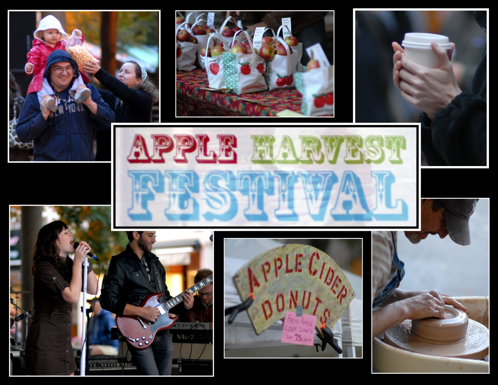

About the Festival:
The 33rd Annual Great Downtown Ithaca Apple Harvest Festival will occur from Friday October 2nd to Sunday October 4th. The 2015 Apple Harvest Festival is made possible by support from the Tompkins Trust Company. During the festival, visitors will be able to experience a variety of local entertainment, find various products, and become familiar with the community of Ithaca. At the festival, visitors will be able to see plenty of apples, local produce, fresh baked goods, family entertainment, games, rides, prizes, and live performances on two stages. There will be over 100 vendors selling unique apple varieties, hot apple cider donuts, kettle corn, local farm fresh baked goods and a multitude of around the world specialties. Local farmers are on site selling everything from tasty apple beverages to local pumpkins. Wineries and cideries have regional beverages available for tasting and purchase. Besides food products, visitors can also find quality goods by visiting the 50 different handcrafting artisans along Cayuga Street at the fall craft show which includes jewelry, ceramics, home decor, body care, specialty gifts, unique sculpture, clothing and so much more.

Festival Information:
Date:
Friday October 2, 2015 - Sunday October 4, 2015Time:
Location:
Downtown IthacaMap of Festival:
(Click to Enlarge)
{kind=link}